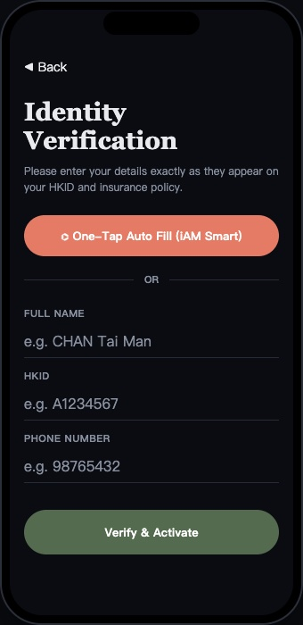
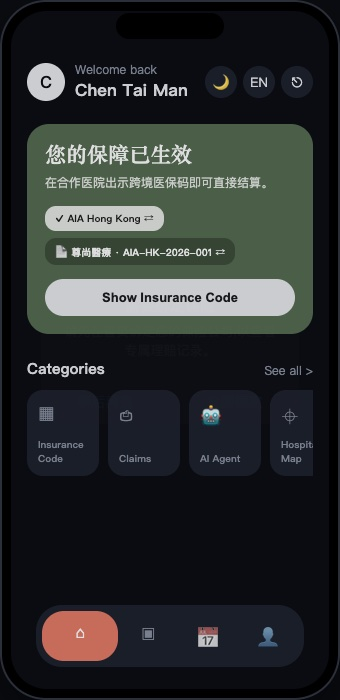
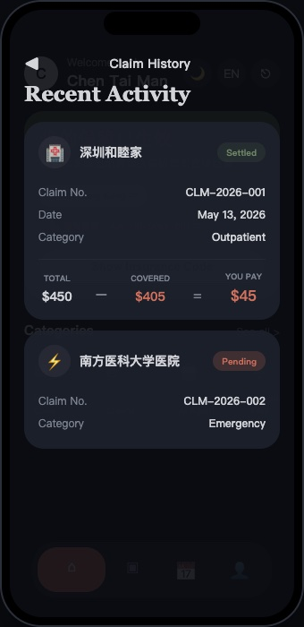
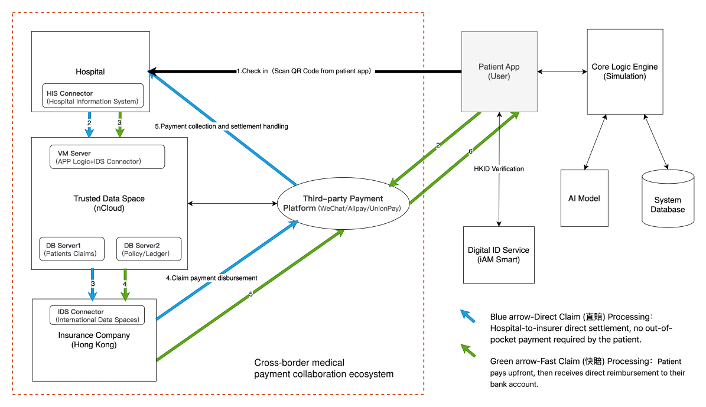

Overview
HKEdgeApp is a cross-border Hong Kong–Shenzhen medical data application for iOS and Android, built through a school-enterprise internship with Hong Kong Data Ltd. It supports the flow for Hong Kong residents seeking medical treatment in mainland China: identity verification and insurance binding, a cross-border medical QR code, claims submission and tracking, and hospital-side claim verification.
The application consists of 19 front-end screens, 14 API modules, 57 documented files and 64 GitHub commits. The client is a React Native 0.85.3 application with screens written in TypeScript and JavaScript, a Context-based state layer, a service layer for API calls, and a three-language interface; the back end is an Express server with static pages for the hospital and contract-signing demos.
I led the technical side of the four-developer team. I wrote and enforced the team's Git collaboration rules (documented in BRANCH_STRATEGY.md), and reported jointly to our company mentor and the director of the university's AI institute. After the internship, the project was handed over and is now carried forward by engineers at China Unicom.
The code repository is private. Demonstration materials, architecture documentation and selected project documents are reproduced on this page.
App Demo
Screen recording
Interactive demos
- Full feature map (auto tour) — an interactive walkthrough of the 13 app modules; click "Auto Tour" to step through them. This page is self-contained and needs no server.
- End-to-end flow demo — the cross-border medical QR code and claims flow, from identity verification to hospital verification.
Screenshots
Screens from the current app interface (dark theme with orange accents), captured from the interactive feature-map demo.




System Architecture

Feature Map
The demo script in the project documentation lists 13 modules. In the order presented there:
- KYC — name, HKID, phone, or one-tap iAM Smart fill
- Global toggles — theme, three-language cycle, secure logout
- Insurance binding — pick insurer, auto-load policies, switch in one tap
- Route guard — protects gated entries
- Main shell — three-state hero, single-line categories, live progress
- Claims list — cross-insurer aggregation, four filter chips
- Refund on settled claims, with a five-step timeline
- AI agent — bottom-sheet chat backed by the project's LLM endpoint
- Profile — information card and Elder Mode switch
- Activities — history feed
- Categories grid — two live entries and four roadmap placeholders
- Hospital demo — verification screen for B2B presentations
- Elder Mode — fonts of 18px or larger, 110px buttons, three one-tap actions
Git Collaboration and Branch Strategy
I wrote the team's Git collaboration rules in BRANCH_STRATEGY.md (last updated 18 June 2026). The strategy keeps only two permanent branches — main (production, merged into but never committed to directly) and develop (the integration line). All other branches are temporary and deleted after merging: feature/* and fix/* for shared JavaScript/TypeScript code, ios/* and android/* for platform-native changes, and release/* for releases. Work goes through a pull request targeting develop; main is updated only from develop at release time.
When the iOS and Android lines had diverged, I also wrote a branch merge analysis (8 July 2026) documenting four divergent branches, around 20 conflicting files — including mutually exclusive screen registrations in App.tsx and different API-layer designs — and a two-step merge plan: merge the smaller Android branch into develop first, then the larger iOS branch, keeping both screen sets and adopting the unified service layer and fuller i18n coverage.
Branch strategy (rendered document) · Team Git collaboration guide (rendered document) · Full branch merge analysis (rendered document)
Project Documents
The repository's Markdown documents, rendered here as styled pages so they can be read in the browser.
- System architecture — layers, state, navigation, screens and API
- Git branch strategy — permanent and temporary branches, PR workflow
- Frontend–backend API map — screens, API modules and endpoints
- Team Git collaboration guide — Q&A and team conventions
- Branch merge analysis — divergence and two-step merge plan
- App feature map and demo script (English)
- Project README
- System architecture diagram (SVG) · App demo screen recording (MP4)

Further source code and documentation are available on request; the repository itself is private.